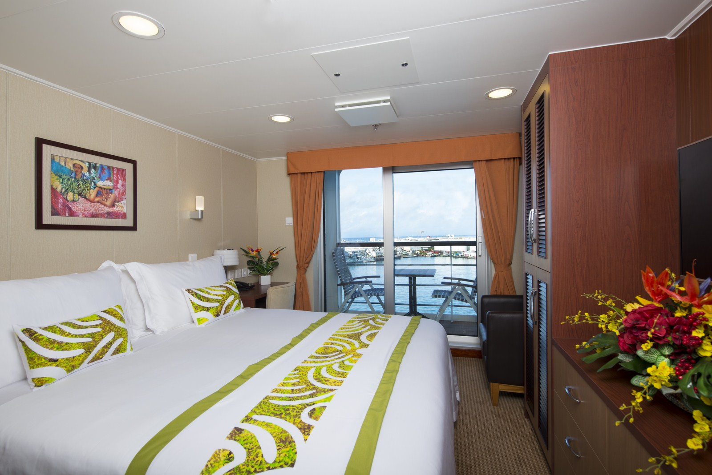
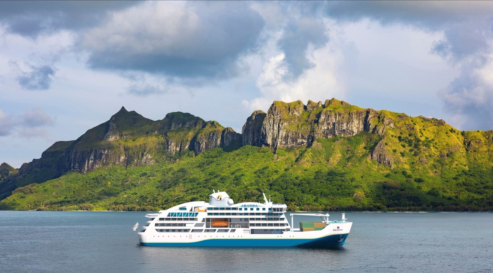
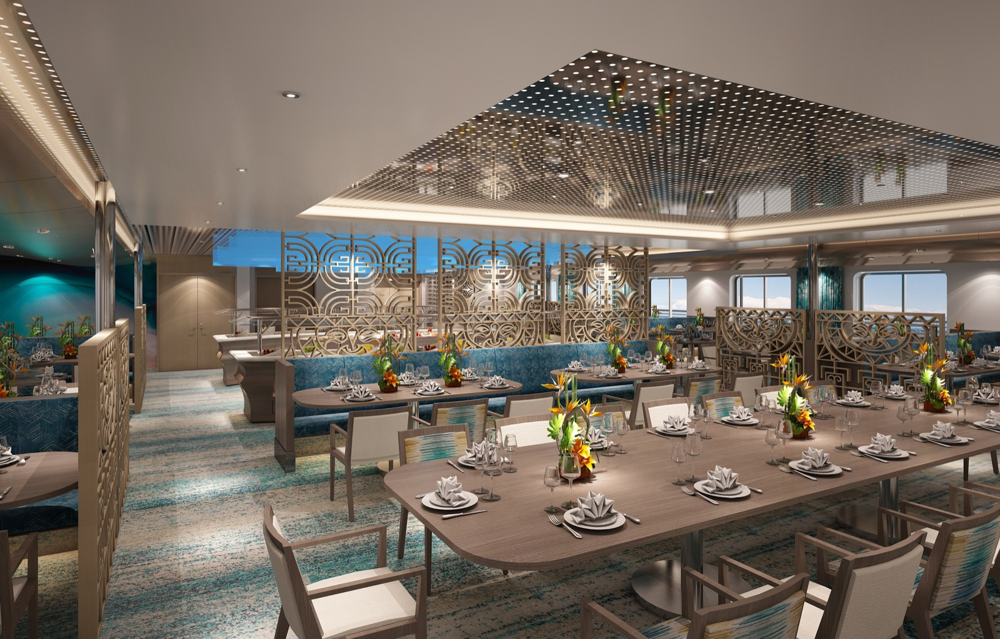

Croisière en Polynésie 2028 : les 46 départs Aranui, comparés
Aranui a ouvert la vente de sa saison 2028 le 5 août 2026, avec pour la première
fois deux navires au calendrier. Cinq itinéraires, de l'archipel des Marquises
inscrit à l'UNESCO à Pitcairn, que deux départs seulement desservent dans l'année.
Classés par ce qu'ils vous font réellement voir du Pacifique.
Par Emmanuel Laveran, rédacteur hôtels et gastronomie✺Publié le 10 août 2026✺16 min de lecture
L'Aranui 5 à l'approche d'une île haute. Le navire mouille au large et
décharge en baleinière : c'est ce qui lui ouvre des baies qu'aucun quai ne dessert.
Photo : Aranui Cruises, site officiel.
TL;DR : l'essentielDeux navires, cinq itinéraires, 46 départs
Les ventes 2028 sont ouvertes depuis le 5 août 2026. C'est la première
saison complète où deux cargos mixtes naviguent en parallèle :
23 départs pour l'Aranui 5, 23 pour l'Aranoa, soit 46 départs.
L'Aranui 5 garde les Marquises, sur sa boucle de 12 jours au
départ de Papeete, 23 fois dans l'année. L'archipel est inscrit au
patrimoine mondial de l'UNESCO depuis le 26 juillet 2024.
L'Aranoa ouvre quatre routes : les Australes avec Huahine (12 jours,
14 départs), les Australes avec Rapa (13 jours, 6 départs),
Pitcairn et les Gambier (12 jours, 2 départs) et les Tuamotu
(5 jours, 1 départ).
Le chiffre qui commande tout : deux départs par an
vers Pitcairn. L'île des mutins du Bounty n'a pas de
piste d'atterrissage et ne s'atteint que par la mer : sur 46 rotations,
deux ouvrent cette porte-là. C'est exactement ce que mesure notre
Indice Desserte, et c'est ce qui distingue ces cinq voyages entre eux.
L'Indice Desserte LMHS, et ce qu'il mesure
Comparer ces cinq itinéraires sur le confort n'apprendrait rien : c'est la même
compagnie, la même cuisine franco-polynésienne, le même vin servi au déjeuner et au
dîner, la même équipe. Ce qui change d'une route à l'autre, c'est la Polynésie qu'elle
ouvre. L'Indice Desserte LMHS, noté sur 5, repose sur quatre marqueurs
vérifiables, et rien d'autre :
Le fret : les escales où le navire livre réellement l'île. C'est
la raison d'être d'un cargo mixte, et ce que les passagers voient depuis le pont.
Les îles habitées : combien de communautés le parcours dessert,
et non combien de mouillages il compte.
Le débarquement : à quai, ou en baleinière quand l'île n'a pas
de port. Une baie sans quai est une baie sans car de tourisme.
La rareté de la route : le nombre de départs programmés en 2028,
et l'existence, ou non, d'une desserte aérienne vers les îles visitées.
Le classement suit cet indice, pas le niveau de prestation. C'est ce
qui fait passer une route à deux départs annuels devant l'itinéraire phare de la
compagnie, et ce qui place une croisière de cinq jours dans les Tuamotu, pourtant
superbe, au bas d'un tableau où rien ne descend sous 3,8 sur 5.
Le tableau : cinq itinéraires, deux navires, 46 départs
Rang
Itinéraire 2028
Navire
Durée
Départs
Archipels
Indice Desserte
01
Pitcairn et Gambier
Aranoa
12 jours
2
Tuamotu, Gambier, Pitcairn
5,0/5
02
Marquises
Aranui 5
12 jours
23
Tuamotu, Marquises, Société
4,8/5
03
Australes et Société avec Rapa
Aranoa
13 jours
6
Australes, Société
4,6/5
04
Australes et Société avec Huahine
Aranoa
12 jours
14
Australes, Société
4,2/5
05
Tuamotu
Aranoa
5 jours
1
Tuamotu
3,8/5
Classement par Indice Desserte LMHS. Durées et nombres de départs
relevés en août 2026 à l'ouverture des ventes 2028. Total : 23 départs Aranui 5,
23 départs Aranoa, 46 départs sur la saison.
L'Aranui 5 : le cargo mixte qui tient les Marquises depuis 2015
C'est le navire qui a fait la réputation de la compagnie, et il reste sur la route
qui lui va le mieux. 126 mètres de long, 22 de large, 5,2 mètres de tirant
d'eau, 15 nœuds : l'Aranui 5 est un vrai navire de charge, capable d'embarquer
1 226,5 tonnes de fret et de le débarquer avec ses propres grues
latérales. Il porte 230 passagers dans 103 cabines, sous pavillon
français, avec un équipage largement marquisien et polynésien.
À bord, huit ponts numérotés de 2 à 9, et une hiérarchie limpide : le restaurant sur
le pont 4, le lounge sur le pont 5, la bibliothèque et le salon de jeux sur le pont 6,
la piscine extérieure sur le pont 7, le pont soleil sur le 8, et
tout en haut le Sky Bar, sur le Sky Deck 9, panoramique, où l'on
regarde les îles sortir de l'horizon. Le spa et la salle de sport occupent le pont 2,
deux salles de conférence accueillent les causeries culturelles, et la compagnie
revendique le premier salon de tatouage en mer, tenu par un artiste
marquisien qui grave les motifs traditionnels de l'archipel.

Une cabine à balcon de l'Aranui 5. Les motifs du linge reprennent le
tapa marquisien, et la porte-fenêtre ouvre sur la manœuvre de déchargement.
Photo : Aranui Cruises, site officiel.
Les logements suivent la même philosophie, du plus simple au plus large :
38 cabines standard à hublot de 11 m², 28 Deluxe et Superior Deluxe de
13 à 14,5 m² avec un balcon de 4 m², 31 suites de 18 à 22 m² avec des
balcons de 4 à 12 m², cinq dortoirs partagés, quatre de quatre couchages et un de huit,
et au sommet du pont 9 une suite présidentielle de 41 m² prolongée de 12 m² de
balcon. Toutes disposent de la climatisation et d'une salle de bains privative.
Les Marquises en 12 jours, 23 fois dans l'année
La boucle part de Papeete et couvre environ 3 300 kilomètres. Elle
ouvre par Fakarava, atoll des Tuamotu classé réserve de biosphère par
l'UNESCO, puis met le cap sur les six îles habitées de l'archipel :
Nuku Hiva et ses baies profondes, Ua Pou et ses
colonnes de basalte dominées par le mont Oave à 1 230 mètres,
Ua Huka et ses chevaux en liberté, Hiva Oa où reposent
Paul Gauguin et Jacques Brel, Tahuata que l'on gagne en baleinière
faute d'aéroport et de quai, et Fatu Hiva, la plus verte, avec sa baie
des Vierges. Le retour passe par Rangiroa et Bora Bora.
Nuku Hiva est à 1 398 kilomètres de Tahiti : c'est la mesure exacte de
ce que ce voyage franchit.
Le fret fait partie du spectacle, et c'est ce qui rend ces escales incomparables. À
l'aller, le navire livre vivres, boissons, matériaux et véhicules aux
9 839 habitants de l'archipel. Au retour, il remonte le
coprah, les agrumes et les fûts de jus de noni que les vallées
produisent. Les passagers débarquent dans le même mouvement, sur la même barge, au
même rythme que la marchandise.
Depuis le 26 juillet 2024, ces îles ont un titre que très peu de
lieux au monde partagent. Réunie à New Delhi pour sa 46e session, l'UNESCO a
inscrit Te Henua Enata, la Terre des Hommes, au patrimoine mondial en
bien mixte, sur trois critères naturels et deux critères culturels.
Une quarantaine de sites seulement, sur la liste entière, sont reconnus à la fois pour
leur nature et pour leur culture. Les Marquises en font partie depuis deux ans.
L'Aranoa : le second navire, et quatre routes que personne d'autre ne fait

L'Aranoa, 116 mètres, 198 passagers, première rotation le 6 mars 2027.
Vue d'artiste fournie par la compagnie, le navire étant en construction en Chine à la
date de cette publication. Image : Aranui Cruises.
L'Aranoa est le premier navire neuf de la compagnie depuis l'Aranui 5, et sa
première rotation part de Papeete le 6 mars 2027. La saison 2028 est
donc sa première année pleine, et le calendrier le montre : quatre itinéraires,
23 départs, sur des archipels que le tourisme de croisière n'a jamais desservis
régulièrement.
Le navire mesure 116 mètres sur 21 et embarque 198 passagers
dans 91 cabines, dont 62 à balcon privatif. C'est un ratio de
68 %, et il change tout : sur une route où l'on navigue plusieurs
nuits d'affilée entre deux archipels, la moitié du voyage se passe à regarder l'océan.
La gamme monte de la cabine à hublot de 15 m² à la
suite présidentielle de 40,5 m² plus 7 m² de balcon, en passant par la
Grand Royal Suite, dont les 14,5 m² de terrasse sont le plus grand
balcon de la flotte. Deux restaurants, deux bars, deux jacuzzis avec vue, un spa, une
salle de sport, une boutique et un salon de tatouage complètent le bord.

L'un des deux restaurants de l'Aranoa, avec ses claustras aux motifs
marquisiens et ses grandes tablées. Vue d'artiste. Image : Aranui Cruises.
Comme son aîné, l'Aranoa est un cargo mixte, et c'est là son
intérêt : il assure le ravitaillement des Australes, l'archipel le plus austral de la
Polynésie française. Ce n'est pas un décor, c'est un contrat de desserte, et il donne
au navire une place dans la vie des îles que sa jauge seule ne lui donnerait pas.
Les cinq itinéraires 2028, classés par l'Indice Desserte
01
Pitcairn et Gambier, 12 jours indice 5,0/5
Pour qui : ceux pour qui le mot « rare » a encore un sens. Deux
départs en 2028, et rien d'équivalent ailleurs dans le Pacifique.
C'est la route la plus difficile à obtenir de tout le calendrier polynésien.
Pitcairn n'a pas de piste d'atterrissage et ne s'atteint que par la
mer : le plus petit territoire britannique compte une cinquantaine
d'habitants, tous descendants des mutins du Bounty, débarqués en
janvier 1790 avec six Tahitiens et douze Tahitiennes, et qui
incendièrent le navire pour effacer leur trace. Le village d'Adamstown porte encore
le nom de l'un d'eux. On y arrive comme on y est toujours arrivé, en canot, depuis
un navire au mouillage.
La route y va par les Tuamotu et les Gambier,
dont Mangareva et son lagon fermé, l'un des plus vastes de Polynésie. Douze jours
pour franchir la distance que les mutins ont mise plusieurs mois à couvrir, et
deux occasions dans l'année de le faire.
Aranoa · 12 jours · 2 départs en 2028 · Tuamotu, Gambier, Pitcairn ·
Île accessible uniquement par la mer ·
Fiche officielle →
02
Marquises, 12 jours indice 4,8/5
Pour qui : le premier grand voyage polynésien, et de loin le
plus complet. Vingt-trois départs, donc des dates qui existent vraiment.
C'est l'itinéraire fondateur de la compagnie, et il coche tous les marqueurs de
l'indice : six îles habitées desservies, du fret déchargé à chaque
escale, des débarquements en baleinière à Tahuata et à Fatu Hiva, et un archipel
que l'UNESCO a inscrit en 2024. Ajoutez Fakarava à l'aller,
Rangiroa et Bora Bora au retour, et vous avez trois archipels en douze jours.
Ce que les Marquises donnent et que rien ne remplace, c'est une densité
culturelle intacte : les tiki de pierre et les tohua de Nuku Hiva, la
sculpture sur bois de rose de Ua Huka, l'os et la nacre travaillés à Tahuata, la
tombe de Gauguin et celle de Brel sur la colline d'Atuona, et la baie des Vierges
de Fatu Hiva au petit matin, qui reste l'un des plus beaux mouillages du monde.
Aranui 5 · 12 jours · 23 départs en 2028 · Papeete, Fakarava,
Nuku Hiva, Ua Pou, Ua Huka, Hiva Oa, Tahuata, Fatu Hiva, Rangiroa, Bora Bora ·
Environ 3 300 km ·
Fiche officielle →
03
Australes et Société avec Rapa, 13 jours indice 4,6/5
Pour qui : ceux qui ont déjà fait les Marquises, et qui veulent
aller plus au sud que la Polynésie ne va d'habitude.
Rapa est l'île habitée la plus australe de la Polynésie française,
507 habitants, et elle n'a pas d'aéroport. On n'y va qu'en bateau. Le
relief y dessine une baie en croissant bordée de falaises qui tombent dans l'eau
comme des fjords, et le climat, plus frais que partout ailleurs dans le territoire,
y fait pousser des pommes, des poires et des nectarines. Six départs seulement
portent cette escale en 2028, et c'est ce qui vaut à cet itinéraire une journée de
plus que les autres.
Le reste du parcours dessert les Australes habitées, chacune avec sa signature :
Rurutu, ses falaises percées de grottes et ses baleines à bosse
d'août à octobre, Raivavae et ses vingt-huit motu qui lui
valent son surnom de Bora Bora des Australes, Tubuai et son lagon
presque deux fois plus vaste que l'île, Rimatara et son lori de
Kuhl, perroquet endémique que l'on ne voit nulle part ailleurs. Puis les îles de la
Société pour finir, Raiatea et Bora Bora.
Aranoa · 13 jours · 6 départs en 2028 · Rapa, Raivavae, Tubuai,
Rurutu, Rimatara, Raiatea, Bora Bora · Rapa sans desserte aérienne ·
Fiche officielle →
04
Australes et Société avec Huahine, 12 jours indice 4,2/5
Pour qui : le meilleur compromis du calendrier. Quatorze
départs, la plus large offre de dates après les Marquises.
C'est l'itinéraire de base de l'Aranoa, et celui qui porte sa mission de
ravitaillement : les quatre Australes desservies par avion,
Rimatara, Rurutu, Tubuai et Raivavae, reçoivent ici leur fret par
la mer, ce qui reste le seul moyen de leur acheminer un moteur, une charpente ou
un groupe électrogène. Le parcours ajoute les îles de la Société,
avec Huahine, entrée au programme depuis peu, Raiatea et son marae de
Taputapuātea inscrit au patrimoine mondial, Bora Bora et Moorea.
C'est le voyage le plus varié des cinq : la Polynésie des cartes postales et
celle des cargos dans la même boucle, avec le confort d'un navire neuf et
quatorze dates au choix dans l'année.
Aranoa · 12 jours · 14 départs en 2028 · Rimatara, Rurutu, Tubuai,
Raivavae, Huahine, Raiatea, Bora Bora ·
Fiche officielle →
05
Tuamotu, 5 jours indice 3,8/5
Pour qui : ceux qui n'ont pas deux semaines, et ceux qui veulent
ajouter une mise en bouche maritime à un séjour terrestre.
C'est le format court de la compagnie, et il n'existe qu'une fois en 2028. Cinq
jours dans le plus grand ensemble d'atolls du monde, des lagons dont l'eau passe du
turquoise au bleu d'encre en quelques mètres de fond, et des passes réputées parmi
les plus belles de la planète pour la plongée. La proposition est simple et
rare : voir les Tuamotu depuis un navire de charge plutôt que depuis un
bungalow, avec les escales de ravitaillement qui vont avec.
C'est aussi la formule à retenir pour enchaîner : cinq jours dans les atolls
avant ou après une grande boucle, et la remise consacrée aux croisières
consécutives prend alors tout son sens.
Aranoa · 5 jours · 1 départ en 2028 · Archipel des Tuamotu ·
Fiche officielle →
Le mot d'EmmanuelLe meilleur argument de ce navire est écrit sur son manifeste de fret
Il y a
des compagnies qui vendent des îles, et il y a celles qui les desservent. Aranui fait
les deux depuis quarante ans, et l'ordre des mots compte : le navire irait à Fatu Hiva
même sans passager, parce que la vallée attend sa livraison.
C'est cette obligation-là qui produit le voyage, et non l'inverse.
Elle explique les baleinières, les horaires que personne ne garantit, l'équipage
marquisien, et le fait que 2028 aligne deux départs vers une île de cinquante
habitants qu'aucun avion n'atteint. Le second navire ne dilue pas cette idée, il la
double : l'Aranoa emporte le même contrat vers les Australes. Sur un marché où le mot
« expédition » sert d'argument de brochure, en voici une dont la preuve tient dans un
connaissement.
Emmanuel Laveran, rédacteur hôtels et gastronomie
Les offres 2028, telles que la compagnie les écrit
La saison a ouvert à la vente le 5 août 2026, avec une campagne de
réservation anticipée valable jusqu'au 31 décembre 2026 :
15 % sur toutes les croisières de l'Aranoa en 2028.
10 % sur toutes les croisières de l'Aranui 5 en 2028.
15 % au titre du back-to-back, pour deux croisières
consécutives.
Un point mérite d'être lu avant de calculer quoi que ce soit, parce qu'il n'apparaît
dans aucun comparateur. Les remises Aranui s'appliquent au tarif de base, avant
taxes, sur toutes les catégories de cabines, et pour les nouvelles réservations
seulement. La compagnie précise également qu'elles ne se combinent ni entre
elles ni avec le programme de fidélité : on retient la plus avantageuse. Sur un
enchaînement de deux croisières réservé avant la fin 2026, cela revient à comparer deux
scénarios simples, la remise anticipée d'un côté, le back-to-back de l'autre, et
à choisir. C'est une bonne nouvelle pour qui aime savoir ce qu'il paie.
Le Tiki Club, et ce qu'il vaut à partir de la deuxième croisière
Lancé pour les quarante ans de la compagnie, le Tiki Club compte
quatre niveaux, Bronze, Silver, Gold et Pearl. Il ouvre de
5 à 12,5 % de remise sur les croisières suivantes, de
20 à 25 % sur les dépenses à bord, des surclassements, des crédits
wifi et des modifications de réservation offertes. Le détail qui compte pour 2028 :
les points acquis sur un navire valent sur l'autre. Une traversée des
Marquises sur l'Aranui 5 alimente donc un futur départ vers les Australes ou vers
Pitcairn sur l'Aranoa.
Pourquoi cette page ne publie aucun tarif
Une croisière Aranui se vend au forfait, par personne, en fonction d'une catégorie de
cabine et d'une occupation, hors vols internationaux, et le montant affiché par un
distributeur n'est presque jamais celui d'un autre. Nous préférons donner ce qui est
stable et vérifiable, à savoir la durée, le nombre de départs, les escales, les
remises et leurs conditions exactes, et vous laisser demander un devis
nominatif. Ce qui est inclus, en revanche, l'est pour tout le monde :
la pension complète, le vin au déjeuner et au dîner, les taxes et les
excursions guidées prévues au programme. C'est un point fort réel de la
formule, et il rend les comparaisons plus honnêtes qu'il n'y paraît.
Aranui 5 ou Aranoa : lequel choisir en 2028
Prenez l'Aranui 5 si c'est votre premier voyage en Polynésie
profonde. Les Marquises concentrent tout ce qui fait la singularité de la compagnie,
l'archipel est inscrit à l'UNESCO, et vingt-trois départs vous laissent choisir vos
dates plutôt que de les subir.
Prenez l'Aranoa si vous connaissez déjà les Marquises, si vous
voulez un balcon avec une très forte probabilité d'en obtenir un, ou si l'une des trois
routes rares vous appelle. Six départs vers Rapa, deux vers Pitcairn, un vers les
Tuamotu : ces places-là se retiennent tôt, et la remise anticipée expire précisément au
moment où les meilleurs départs se remplissent.
Quand ont ouvert les ventes de la saison 2028 d'Aranui ?
Le 5 août 2026. La saison 2028 aligne 46 départs,
23 sur l'Aranui 5 et 23 sur l'Aranoa. Une campagne de réservation anticipée court
jusqu'au 31 décembre 2026, avec 10 % de remise sur l'Aranui 5 et
15 % sur l'Aranoa.
Quelle est la différence entre l'Aranui 5 et l'Aranoa ?
L'Aranui 5 mesure 126 mètres, embarque 230 passagers dans
103 cabines et navigue depuis 2015 : c'est le navire des Marquises, avec 23 départs
en 2028. L'Aranoa mesure 116 mètres, embarque 198 passagers dans
91 cabines dont 62 à balcon, soit 68 %, et effectue sa première
rotation le 6 mars 2027 : il ouvre les Australes, Pitcairn, les
Gambier et les Tuamotu, avec 23 départs en 2028. Les deux sont des cargos mixtes qui
ravitaillent réellement les îles.
Quels itinéraires Aranui propose-t-il en 2028 ?
Cinq. L'Aranui 5 assure les Marquises en 12 jours,
23 départs. L'Aranoa propose les
Australes et Société avec Huahine, 12 jours, 14 départs, les
Australes et Société avec Rapa, 13 jours, 6 départs,
Pitcairn et Gambier, 12 jours, 2 départs, et les
Tuamotu, 5 jours, 1 départ.
Peut-on visiter Pitcairn avec Aranui en 2028 ?
Oui, sur l'itinéraire Pitcairn et Gambier de l'Aranoa, 12 jours,
2 départs seulement dans l'année. Pitcairn, plus petit territoire
britannique, compte une cinquantaine d'habitants descendants des mutins du
Bounty, arrivés en janvier 1790. L'île n'a pas d'aéroport et
ne s'atteint que par la mer, ce qui fait de cette rotation la plus rare du
calendrier polynésien.
Les remises Aranui 2028 sont-elles cumulables ?
Non, et c'est écrit noir sur blanc dans les conditions de la compagnie. Les
remises portent sur le tarif de base avant taxes, s'appliquent à
toutes les catégories de cabines et aux nouvelles réservations,
mais ne se combinent ni entre elles ni avec le programme de fidélité Tiki
Club. Il faut donc comparer la remise anticipée, jusqu'au 31 décembre 2026,
et la remise back-to-back de 15 % sur deux croisières consécutives, puis
retenir la plus avantageuse.
Qu'est-ce qui est inclus dans une croisière Aranui ?
La pension complète, le vin servi au déjeuner et au
dîner, les taxes et les excursions guidées
prévues au programme. Les vols internationaux jusqu'à Papeete restent à la
charge du voyageur. C'est une formule proche du tout compris, ce qui explique que
les tarifs affichés paraissent élevés à la première lecture et se comparent bien à
l'usage.
Pourquoi les Marquises sont-elles au patrimoine mondial de l'UNESCO ?
L'archipel a été inscrit le 26 juillet 2024, lors de la
46e session du Comité du patrimoine mondial réunie à New Delhi, sous le
nom de Te Henua Enata, la Terre des Hommes. C'est un
bien mixte, retenu à la fois sur trois critères naturels et deux
critères culturels, distinction que partagent une quarantaine de sites seulement
dans le monde. L'inscription salue l'occupation de ces îles par une civilisation
arrivée par la mer autour de l'an 1000.
Combien de temps dure la traversée jusqu'aux Marquises ?
La boucle complète depuis Papeete dure 12 jours et couvre
environ 3 300 kilomètres. Nuku Hiva, centre administratif de
l'archipel, se trouve à 1 398 kilomètres de Tahiti : le navire
navigue donc plusieurs nuits d'affilée, avec une escale aux Tuamotu à l'aller,
à Fakarava, réserve de biosphère de l'UNESCO.
Méthode et sources
Les cinq itinéraires de la saison 2028 d'Aranui Cruises, classés par l'Indice
Immersion LMHS noté sur 5 et non par niveau de prestation. L'indice repose sur quatre
marqueurs vérifiables : escales où le navire livre effectivement du fret, nombre
d'îles habitées desservies, débarquement en baleinière faute de quai, rareté de la
route mesurée au nombre de départs programmés et à l'existence d'une desserte
aérienne. Aucune navigation de contrôle n'a été effectuée pour cette
analyse, et nous ne prétendons pas le contraire : durées, nombres de départs,
caractéristiques des deux navires, escales et conditions commerciales ont été relevés
en août 2026 sur le site officiel de la compagnie et recoupés avec la presse
professionnelle qui a couvert l'ouverture des ventes du 5 août 2026.
Aucun tarif n'est publié, et la page explique pourquoi.
L'Aranoa étant en construction à la date de publication, les images qui le
représentent sont des vues d'artiste fournies par la compagnie et signalées comme
telles. Aucun partenariat commercial, aucune affiliation, aucun voyage offert.